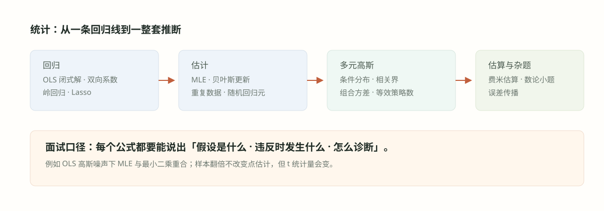

#027. 统计二：岭回归、Lasso 与模型选择
慢速起步：把误差平方与参数惩罚真正算开
先只拟合一个需要受罚的权重b：输入固定为1，观察答案为3，模型预测b。这里b是权重，不是后文通常不处罚的截距。没有惩罚时，错误平方为\((3-b)^2\)，取b=3就能让它为0。现在额外处罚权重太大，目标变成\(J(b)=(3-b)^2+b^2\)。为什么答案从3变成1.5？下面用两条路线分别算。
1．配方路线：每次只做一次加减乘除
关键的一步是\((b-1.5)^2=b^2-3b+2.25\)；为了不改变原式，括号内增加2.25时也要减回2.25。最后的4.5与b无关，而平方项最小为0，因此最优b=1.5，总目标为4.5。若仍用旧答案b=3，数据误差为0，但罚项是9，总目标是9；新答案的误差和罚项各为2.25，总目标更小。这不是“训练误差也更小”，而是换了要最小化的目标。
2．求导路线：为什么要在这里置零
对\(2b^2-6b+9\)逐项求导，得到\(4b-6\)。导数为负时，增加b能让目标下降；为正时，继续增加b会让目标上升。令\(4b-6=0\)，同样得到b=1.5。二阶导为正数4，说明曲线向上弯；刚才的配方还直接证明这就是全局最小值。
把惩罚强度写成非负的\(\lambda\)，目标为\((3-b)^2+\lambda b^2\)。先合并同类项：\((1+\lambda)b^2-6b+9\)；求导为\(2(1+\lambda)b-6\)，所以\(b=3/(1+\lambda)\)。\(\lambda=0,1,3\)时答案依次为3、1.5、0.75。\(\lambda\)越大，越愿意接受拟合偏差来压低权重；哪个值预测最好，仍需验证数据。
3．两个完全重复的特征：先看“不唯一”到底是什么
暂不设截距。两条记录的特征分别为(1,1)、(2,2)，标签分别为2、4。预测是\(b_1x_1+b_2x_2\)。若\(b_1+b_2=2\)，两条预测便都是正确的；(2,0)、(1,1)、(100,−98)全都能做到。因此最小二乘有拟合值，却不能从这些数据分清两个系数分别是多少。
给两个权重都加平方惩罚，取\(\lambda=2\)。逐坐标求导得到\(7b_1+5b_2=10\)、\(5b_1+7b_2=10\)。两式相减得\(2b_1-2b_2=0\)，故b₁=b₂；代回得到\(12b_1=10\)，所以两个都为\(5/6\)。现在预测为\(5/3,10/3\)，平方误差为\(1/9+4/9=5/9\)，罚项为\(2[(5/6)^2+(5/6)^2]=25/9\)，总目标为\(10/3\)。惩罚使两权重更稳定，也允许残差不为0。
4．矩阵公式从每个参数的导数来，而不是靠背
记第i条预测为\(\sum_jx_{ij}\beta_j\)，残差\(e_i=y_i-\sum_jx_{ij}\beta_j\)。本章Ridge采用\(J=\sum_i e_i^2+\lambda\sum_j\beta_j^2\)。只改变第k个权重时，残差对它的导数为−xᵢₖ，平方项给−2xᵢₖeᵢ，罚项给2λβₖ：
把含未知权重的项移到右侧，再把两边除以2：\(\sum_j(\sum_i x_{ik}x_{ij})\beta_j+\lambda\beta_k=\sum_i x_{ik}y_i\)。对每个k都写一条，合起来就是\((X^TX+\lambda I)\beta=X^Ty\)。I是对角线上全1、其余为0的单位矩阵，加λI只会给每条方程自己那项的系数加λ。
为什么全罚时λ>0一定可逆？任取非零向量v，\(v^T(X^TX+\lambda I)v=\|Xv\|^2+\lambda\|v\|^2\)。第一项不负，第二项严格为正，因此没有非零方向会被变成0，方程有唯一解。后面的特征值语言只是换一种看法；不需要先掌握它，才能理解这段证明。
5．先把Lasso分段算完，再理解“尖角”
统一采用\(f(b)=\tfrac12(z-b)^2+\lambda|b|\)，z是无惩罚时想达到的权重。绝对值在b>0时是b，导数为+1；在b<0时是−b，导数为−1。于是正半轴导数为b−z+λ，候选解b=z−λ，但它必须真的大于0，即z>λ。负半轴导数为b−z−λ，候选解b=z+λ，只有z<−λ时有效。
剩下\(-\lambda\le z\le\lambda\)时，正半轴导数非负，向右走不会下降；负半轴导数非正，向右朝0走反而下降。故最小值恰在b=0。这给出软阈值：z>λ取z−λ，z<−λ取z+λ，中间取0。例如λ=1时，z=3、0.6、−2分别得到2、0、−1。它不是“先套公式再宣布稀疏”，而是两侧方向共同把最小点夹在0。
口径提醒：若把平方项的1/2去掉而L1罚不变，阈值会变成λ/2。若Ridge写\(\tfrac12(z-b)^2+\tfrac\lambda2b^2\)，解是z/(1+λ)；若罚项写λb²，解则是z/(1+2λ)。先看完整目标，再比较系数。
6．截距、单位与验证：最后三个实现条件
模型\(a+x^T\beta\)通常只罚β，不罚截距a。否则把全部标签平移10，理想只是a加10，却会被截距罚项额外压回，结果依赖标签零点。可在训练数据上中心化x、y，先求β，再由\(a=\bar y-\bar x^T\beta\)恢复截距；此时才可直接使用上面全罚的短矩阵式。
同一个特征若从“元”改成“千元”，数值缩为原来的1/1000，为保持预测不变，其系数要增大1000倍，平方罚会增大一百万倍。常见做法是在训练期以\((x_j-\mu_j)/s_j\)缩放，其中μ、s只由训练期算出，再原样用于验证期；零方差列应先移除。标准化是常用选择，也可根据量纲设计不同惩罚，不是所有场景必须强行采用同一缩放。
λ是要用验证数据选择的超参数，不是在同一训练目标中任意调到训练误差最小。金融数据按时间先后分训练、验证和最终测试；每个训练窗口独立拟合标准化，比较不同λ在后续验证段的主任务误差。确定规则之后才看最终测试；若反复看测试再改λ，它就不再是独立测试。

#学习目标：当 OLS 解不出来或解不稳时
026 章的结论是 \(\hat\beta=(X^TX)^{-1}X^Ty\)，前提是 \(X^TX\) 可逆。可现实中两类场景天天出现：一是解不出来——特征比样本多（\(p\gt n\)）、列之间完全共线，\(X^TX\) 奇异；二是解得出来但不稳——近似共线让 \(X^TX\) 的最小特征值接近零，估计方差 \(\sigma^2(X^TX)^{-1}\) 爆炸，系数在样本微扰下剧烈跳动。两类问题的共同药方是正则化：在损失里对系数大小加罚，把病态问题改造成良态问题。
本章主线是三种「治法」的分工：岭回归（L2 罚）治共线与病态，代价是均匀收缩所有系数；Lasso（L1 罚）额外买到稀疏解，能顺带做特征选择；模型选择（交叉验证、信息准则）决定模型复杂度这一「元参数」。三套工具回答同一类问题：训练误差下降与泛化能力改善不是一回事，这一句是 S32 与 S22 的分水岭，也是量化研究中回测与实盘差距的统计学投影。
目标 \(\|y-X\beta\|^2+\lambda\|\beta\|^2\)，闭式解 \((X^TX+\lambda I)^{-1}X^Ty\)，特征值整体平移 \(\lambda\)，条件数被压下来。
目标 \(\tfrac12\|y-X\beta\|^2+\lambda\|\beta\|_1\)，约束区域是尖角菱形，最优解常落在角上，产生精确为零的系数。
交叉验证、AIC/BIC、早停、嵌套验证；原则只有一个——用没参与训练的数据评价泛化。
#知识点一：岭回归的谱视角
岭回归（ridge regression）在 OLS 目标上加 L2 罚项：
闭式解与谱平移
求导令零：\(2(X^TX+\lambda I)\beta - 2X^Ty=0\)，得到与 OLS 同构的闭式解：
本节谱公式默认训练数据已中心化、仅给斜率加平方罚，截距单独恢复。读法：岭回归把被求逆的矩阵从 \(X^TX\) 换成 \(X^TX+\lambda I\)——所有特征值同时加 \(\lambda\)，最小特征值从可能为零变成至少 \(\lambda\)，矩阵必然正定可逆。这就是「秩亏也能解」的代数根源。
用奇异值分解 \(X=U\Sigma V^T\)（\(\Sigma\) 的对角元为奇异值 \(s_1\ge\dots\ge s_p\ge0\)）看得更透：\(X^TX=V\Sigma^2V^T\)，于是
这里r是非零奇异值的个数；紧凑SVD只列这些方向。满列秩时OLS系数为 \(\hat\beta=\sum_j v_j (u_j^Ty)/s_j\)；秩亏时同一式给最小范数解。岭回归的系数方向因子是 \(s_j/(s_j^2+\lambda)\)，相对于OLS才是收缩因子 \(s_j^2/(s_j^2+\lambda)\)——数据支撑弱的方向（\(s_j\) 小）收缩狠，数据支撑强的方向几乎不动。\(\lambda\to0\) 在满秩时退回唯一OLS，秩亏时趋向最小范数OLS；\(\lambda\to\infty\) 时受罚权重压向零。
把SVD因子实际代一次：只取一个输入x=2、标签y=6、不设截距，OLS系数为6/2=3。取λ=4，普通岭公式给\(\beta=(2\times6)/(2^2+4)=12/8=1.5\)。SVD中s=2、u=1，所以也应给\([2/(4+4)]\times6=1.5\)。而相对OLS的收缩因子是\(4/(4+4)=1/2\)，乘原系数3仍为1.5。不能把相对因子1/2直接乘uᵀy=6，否则会误得3。这一数值检查能区分“系数本身”与“相对缩小比例”。
条件数怎么变
条件数（condition number）\(\kappa(A)=\lambda_{\max}(A)/\lambda_{\min}(A)\) 度量求逆的数值稳定性。对 \(X^TX\) 与岭版本分别计算：
右端不等式对任意 \(\lambda\gt0\) 成立且随 \(\lambda\) 增大严格改善（\(s_1\gt s_p\) 时）。数值例：\(s_1=10\)、\(s_p=0.1\) 时 \(\kappa(X^TX)=10^4\)；加 \(\lambda=1\) 后 \(\kappa=(100+1)/(0.01+1)\approx100\)，改善两个数量级。梯度下降的收敛速度同样由这个条件数控制（对正定二次目标，采用最优固定步长时，参数误差的最坏收缩因子可写为 \((\kappa-1)/(\kappa+1)\)；任意步长或秩亏问题不能直接套用），所以「岭化」不仅救了求逆，也救了迭代法。
岭回归把系数从无偏推向有偏，换取方差下降。有效自由度 \(\mathrm{df}(\lambda)=\sum_{j=1}^{r}s_j^2/(s_j^2+\lambda)\) 从秩r（\(\lambda\to0\)）降到0；满列秩时r=p——\(\lambda\) 就是你在买「稳定」时付出的「灵活度」货币，交叉验证负责定价。
#知识点二：Lasso 与 L1 几何
Lasso（Least Absolute Shrinkage and Selection Operator）把罚项换成系数绝对值之和：
几何读法：在适当的t下，可把问题看成先限定 \(\|\beta\|_1\le t\)，再在这个区域内寻找残差平方和最小的点；平方误差的等值线从低向高接触该区域。菱形是尖角的，椭圆最容易在顶点处与之相切，而顶点坐标形如 \((0,\dots,0,\beta_k,0,\dots,0)\)——切在角上就意味着其余系数被精确压成零，这就是 Lasso 天然做特征选择的原因。L2 球没有角，切点一般落在弧上，通常连续收缩，不主动形成Lasso那样的一整段归零区间；个别系数仍可能因零信号或抵消而等于0。
| 维度 | Ridge（L2） | Lasso（L1） |
|---|---|---|
| 约束区域形状 | 圆球，光滑无角 | 菱形，有尖角顶点 |
| 解的稀疏性 | 不主动形成稀疏阈值；沿不同主方向收缩程度不同 | 常在角上，产生精确零 |
| 闭式解 | 有：\((X^TX+\lambda I)^{-1}X^Ty\) | 一般无（正交设计例外：软阈值） |
| 强相关特征 | 系数摊分到各特征上 | 倾向只留其一，选择不稳定 |
| 求解算法 | 直接解线性方程组 | 坐标下降、近端梯度（ISTA） |
| 典型用途 | 共线、病态、\(p\gt n\) 的预测 | 特征选择、稀疏模型、可解释性 |
正交设计（\(X^TX=I\)）时有干净解：OLS 系数 \(z=X^Ty\)，Lasso 解为软阈值 \(\hat\beta_j = \mathrm{sign}(z_j)\max(|z_j|-\lambda, 0)\)——比 \(\lambda\) 小的直接归零，其余减去 \(\lambda\)。一般设计下没有闭式，但一阶条件（次梯度条件）仍是面试可写的推导：最优解满足
读法：一个特征要「留下来」，它与残差的相关必须强过 \(\lambda\) 这道门槛；不过线就归零。梯度下降视角下，目标的光滑部分 \(\tfrac12\|y-X\beta\|^2\) 的 Hessian 是 \(X^TX\)，条件数依旧是 \(\kappa(X^TX)\)——先按建模需要缩放特征、并用近端梯度（每步先走光滑梯度、再做软阈值近端操作）或坐标下降，是处理病态的标配；Elastic Net是在同一个目标中同时加入L1与L2，不等同于先做一次Ridge再把结果交给Lasso。
面试被问「LASSO 和 Ridge 的区别」（源题 S27）：先答罚项 L1 对 L2，再答几何（尖角出零系数对光滑球面均匀收缩），再答工程（闭式解有无、相关特征下的行为），最后补 Elastic Net——四层递进，一分钟讲完。
#知识点三：模型选择、过拟合与压缩
正则化强度 \(\lambda\)、特征子集、树的深度、多项式次数——这些都是模型选择（model selection）问题。统一的组织原则：在包含旧模型的更大可行集中，最优训练误差不会更高；验证误差需实际测量，U形误差曲线只是常见教学示意，不是所有模型的定律；交叉验证用于估计选择后的表现，金融序列应按时间验证。
k 折交叉验证（k-fold CV）：把数据切成 k 份，轮流留一份做验证、其余做训练，取 k 个验证误差的平均；留一法（LOOCV）是 \(k=n\) 的极端。选 \(\lambda\) 用 CV，报告最终性能必须再用完全没碰过的测试集。
信息准则：\(\mathrm{AIC}=2k-2\ell\)（侧重预测）、\(\mathrm{BIC}=k\log n-2\ell\)（\(\ell\) 为最大对数似然，\(k\) 为参数数；BIC 罚更重，偏好更省的模型）。样本够大时优先 CV，小样本或快速筛选时用准则。
过拟合治理（源题 S23）：诊断看「训练误差低、验证误差高」的剪刀差；药方按优先级：加数据、降复杂度（剪枝、降阶、减特征）、正则化（L1/L2、早停）、集成（bagging 降方差）。验证纪律是使用未参与拟合与选型的数据评估；这能发现问题，不会自动治好过拟合。
大模型压缩（源题 S24）：量化（float32 降到 int8，牺牲精度换内存与速度）、剪枝（删小权重/神经元再微调）、知识蒸馏（大模型当教师训小模型）、低秩分解（把大矩阵拆成两个瘦矩阵乘积）。取舍口径：内存/延迟预算、可接受的精度回吐、以及压缩后是否需要再校准。
bagging 与 boosting（源题 S28）：bagging（bootstrap aggregating）在重采样数据上训练多个模型取平均，通常用于降低不稳定模型的方差，但并非严格保证偏差不变，代表随机森林；boosting 串行训练弱模型、每轮拟合上一轮的残差，主要降偏差，代表 AdaBoost 与梯度提升。口径：深树高方差配 bagging，浅桩高偏差配 boosting。
这些条目在例题 8 里以「面试问答」的形式再串一遍，此处先把机制记牢：CV 防「用测试集调参」的泄漏，信息准则给复杂度明码标价，正则与压缩都是在「容量」与「稳定」之间做交易。
#例题详解 I：从闭式解到条件数
例题 1（源题 F1，综合题拆解）：从波动率估计器出发的一串追问。(a) 日常收益率序列的波动率估计器有哪些性质、如何做样本外检验？(b) 线性回归的闭式解何时出现不可逆问题？岭回归的闭式解是什么？(c) 加了 \(\lambda I\) 之后被求逆矩阵的谱怎么变？(d) Lasso 没有闭式解，用梯度下降求解时 conditioning 意味着什么？
先逐步跟算，再看公式汇总
把四问拆成四个小检查：(a)先用三个零均值收益(−1,0,1)练方差估计：平方平均为\((1+0+1)/3=2/3\)。无偏针对“重复抽样的平均结果”，不是说这一组答案一定等于真实方差。\(E[r^2]=\sigma^2\)在零均值时成立；要进一步得到\(\operatorname{Var}(\widehat\sigma^2)=2\sigma^4/n\)和卡方分布，还需独立正态误差，只有iid并不够。
(b)上面重复两列的X就是不可逆反例；加λ=2后系数由两条可区分方程确定为5/6、5/6。(c)对这个例子，(1,1)方向被XᵀX放大10倍，(1,−1)被变成0；加2I后分别放大12倍与2倍，最弱方向不再丢失。最大/最小放大倍率之比从无穷变6，就是这里的条件数改善。
(d)Lasso在0处没有单个导数，不能假装总有光滑梯度。若先按平方损失做一步梯度更新得到z，再对每项做软阈值，这叫近端梯度。步长为η时阈值是ηλ，不是永远用λ；一般设计的坐标下降还要除以该列平方和。下文先手算一维，再看这些优化方法名词。
后读：原有公式汇总、几何解释与面试追问
建模。这是「一题串一章」的面试题：从估计量性质的语言（无偏、一致、稳健）出发，穿过 OLS 的可逆条件，落到岭与 Lasso 的数值性质。逐问作答。
(a) 推导。零均值假设下 \(\hat\sigma^2=\frac1n\sum_{i=1}^n r_i^2\) 是 \(\sigma^2\) 的无偏、一致估计（零均值、有限二阶矩下得到无偏；独立且有适当矩条件时可谈一致性。只有进一步假设独立正态，方差才为 \(2\sigma^4/n\)，并有卡方分布）。弱点：对离群点不稳健（平方放大尾部）、等权对待新旧信息、忽略波动聚集。改进族：EWMA \(\hat\sigma_t^2=(1-\lambda)\sum_{k\ge0}\lambda^k r_{t-k}^2\) 指数遗忘、GARCH 显式建模条件方差、高频已实现波动率。样本外检验：把估计出的波动率与随后实现的波动率回归（Mincer–Zarnowitz 回归，看截距零、斜率一），或比较多个估计器的样本外 RMSE/QLIKE。
(b) 推导。OLS 闭式解 \(\hat\beta=(X^TX)^{-1}X^Ty\) 需要 \(\mathrm{rank}(X)=p\)。不可逆的三张面孔：完全共线的列（含 dummy 陷阱）、\(p\gt n\)（500 行 1000 列必秩亏）、以及数值上 \(s_p\approx0\) 的病态。岭回归给出始终可逆的闭式解 \((X^TX+\lambda I)^{-1}X^Ty\)，推导见知识点一（对增广目标求导即可）。
(c) 推导。谱的变化就是「整体平移」：\(X^TX\) 的特征值 \(s_j^2\) 变成 \(s_j^2+\lambda\)。条件数从 \(s_1^2/s_p^2\) 变为 \((s_1^2+\lambda)/(s_p^2+\lambda)\)，数值例 \(s_1=10, s_p=0.1\)：\(10^4\to\) 约 \(100\)（\(\lambda=1\)）。每个主方向的系数被乘上 \(s_j^2/(s_j^2+\lambda)\)，弱方向被强收缩。
(d) 推导。Lasso 目标的光滑部分 Hessian 为 \(X^TX\)，梯度下降收敛速率由 \(\kappa(X^TX)\) 控制；\(\lambda\|\beta\|_1\) 不可导但可次梯度处理。实务三件套：先标准化列（让罚项对各特征公平）；用近端梯度/坐标下降，每步软阈值 \(\hat\beta_j\leftarrow \mathrm{sign}(z_j)\max(|z_j|-\lambda,0)\) 处理非光滑；病态严重时用 Elastic Net 或先岭预条件。conditioning 差 = 等值线被拉成细长椭圆 = 折线振荡慢收敛。
检验。一致性核对：\(\lambda=0\) 时 (b)(c) 全部退回 OLS；\(\lambda\to\infty\) 时系数全为零；(c) 的不等式在 \(s_1=s_p\)（正交球对称）时取等号——退化情形自洽。
面试怎么讲。这题的评分点在「逐问而不乱」：每问先给结论公式、再给一句机制解释。可以主动收尾：「编程题库第 73 题『设计矩阵不可逆怎么办』就是 (b) 问——答案是加罚项（岭）、删共线列、或取伪逆 \(X^+=\lim_{\lambda\to0}(X^TX+\lambda I)^{-1}X^T\)，036 章会从工程实现角度再遇它。」
推导补全与自检。\(X^TX\)的特征值\(d_{j}\ge 0\)，加\(\lambda I\)后变为\(d_{j}+\lambda \)，所以\(\lambda >0\)时可逆；条件数由\(d_{\mathrm{\max }}/d_{\mathrm{\min }}\)变为\((d_{\mathrm{\max }}+\lambda )/(d_{\mathrm{\min }}+\lambda )\)。但若截距不受罚，对应罚矩阵并非全I，应先中心化再用该表达。波动率预测的样本外误差要按时间切分，不能用随机打乱让未来信息进入过去模型。
例题 2（源题 S27，亦覆盖同型的 S1）：LASSO 与 Ridge 的区别是什么？
先逐步跟算，再看公式汇总
用三个数把区别说清：统一比较\(\tfrac12(z-b)^2+\tfrac\lambda2 b^2\)与\(\tfrac12(z-b)^2+\lambda|b|\)，取λ=1。Ridge解为z/2，Lasso按上面分段解。z=3时分别为1.5与2；z=0.6时为0.3与0；z=−2时为−1与−1。罚系数的含义不同，不能从这三组数宣布哪种方法在所有目标上“更强”。
真正要认的是：Lasso会给一整个z区间[−1,1]都返回0，而Ridge只在特殊输入或抵消条件下精确为0。L1约束在二维像菱形，p维的坐标轴顶点有2p个，不是2ᵖ个；高维稀疏解也可落在低维面上，不能说每个解都只能留下一个特征。一般相关设计下仍需解完整问题。
后读：原有公式汇总、几何解释与面试追问
建模。两者同为「OLS + 罚项」，区别全部来自罚项的几何形状，从形状往下推性质。
推导。罚项：Ridge 用 \(\lambda\|\beta\|_2^2\)，Lasso 用 \(\lambda\|\beta\|_1\)。约束区域的形状：L2 球光滑无角，L1球在p维有 \(2p\) 个坐标轴顶点。椭圆等值线与约束区域相切的位置：Ridge 在弧上（系数通常连续收缩，但不能保证每一个都非零），Lasso 常在角上（部分系数精确为零，天然特征选择）。代数上 Ridge 有闭式解 \((X^TX+\lambda I)^{-1}X^Ty\)，Lasso 只有次梯度条件（\(|X_j^T r|\le\lambda\) 时 \(\hat\beta_j=0\)）。相关特征下：Ridge 摊分系数、稳定；Lasso 二选一、选择具有不稳定性——这既是它的卖点也是它的风险。
检验。单特征退化情形：两者都变成对一维系数的收缩（Ridge 乘 \(s^2/(s^2+\lambda)\)，Lasso 减 \(\lambda\) 后截断为零）——方向一致、方式不同，与直觉吻合。
面试怎么讲。背下四层结构：罚项→几何→稀疏性→求解与共线行为，最后补一句「Elastic Net 线性组合两种罚，兼得稀疏与稳定」，体现你知道实践中怎么选。
推导补全与自检。一维目标\(0.5(z-\beta )^{2}+\lambda |\beta |\)的最优解为\(sign(z)\max (|z|-\lambda ,0)\)，直接解释Lasso为什么能精确置零。Ridge对应\(\beta =z/(1+2\lambda )\)（此处平方损失系数按0.5、罚项按\(\lambda \beta ^{2}\)），只连续缩小。不同书的\(1/2\)和n归一化会改变\(\lambda \)系数，公式不能跨口径直接抄。
#例题详解 II：重复数据、噪声特征与共线
例题 3（源题 S21）：数据管道出错，每条样本被录入了两次。与正确回归相比，输出的系数、\(R^2\) 和 t 统计量各会怎么变？
先逐步跟算，再看公式汇总
先只检查普通最小二乘：若原来目标为SSE，复制整套数据后目标为2SSE，对任何一组系数都是乘同一正数，所以最优系数不变。总离均值平方和SST也翻倍，因此\(R^2=1-SSE/SST\)不变。这里没有把同一条观测复制成新的独立实验。
设原来n=10、含截距的参数数p=2，原SSE=8，经典残差方差为\(8/(10-2)=1\)。复制后错误地按20条独立记录计算，会给\(16/(20-2)=8/9\)。同时输入交叉乘积翻倍，其逆减半，所以系数标准误平方比为\((8/9)/2=4/9\)，标准误变成2/3，t值虚增为3/2，而不是精确√2。n远大于p时才近似√2。若做Ridge且λ不变，复制后的2SSE+λ罚项还会改变相对惩罚；它不属于本题“OLS系数不变”的结论。
后读：原有公式汇总、几何解释与面试追问
建模。设原设计矩阵 \(X\in\mathbb{R}^{n\times p}\)（\(p\) 个含截距的参数），复制后 \(X'=\binom{X}{X}\)、\(y'=\binom{y}{y}\)，样本数 \(2n\)、秩仍为 \(p\)。
推导。系数：\(X'^TX'=2X^TX\)、\(X'^Ty'=2X^Ty\)，故
t 统计量：残差平方和翻倍 \(\mathrm{RSS}'=2\,\mathrm{RSS}\)，方差估计 \(\hat\sigma'^2 = 2\mathrm{RSS}/(2n-p)\)；再由 \((X'^TX')^{-1}=\tfrac12(X^TX)^{-1}\)，标准误平方为 \(\hat\sigma'^2\cdot\tfrac12 Q_{jj}\)（\(Q=(X^TX)^{-1}\)）。对比原来的 \(\hat\sigma^2 Q_{jj}=\frac{\mathrm{RSS}}{n-p}Q_{jj}\)：
检验。直觉核对：有效信息没变（系数、\(R^2\) 不动），但「自由度账本」多记了一倍样本，标准误按 \(\sqrt{n}\) 法则缩到约 \(1/\sqrt2\)，显著性被虚增——这正是金融面板里「同一资产录两遍」会假造出星星的机制。极端核对 \(p\to0\)：\(t'=t\sqrt2\) 精确成立。
面试怎么讲。先答「系数与 \(R^2\) 不变；错误按独立复制样本计算时，t放大 \(\sqrt{(2n-p)/(n-p)}\)，n远大于p时才近似 \(\sqrt2\)」，再给上述两行推导，最后点破本质：复制数据骗不过点估计，只骗得过「自由度」——所以诊断重复样本要看标准误的异常变好。
推导补全与自检。复制样本后\(X'^TX'=2X^TX\)、\(X'^Ty'=2X^Ty\)，因此系数不变，SSE与SST都翻倍所以\(R^{2}\)不变。错误地把复制行当独立时，经典残差方差变\(2SSE/(2n-p)\)，系数方差相对原来乘\((n-p)/(2n-p)\)，t值虚增\(\sqrt{(2n-p)/(n-p)}\)。真实信息未增加，应去重或按原样本簇处理依赖。
例题 4（源题 S32）：往线性回归里加入一个纯随机的额外参数（与目标无关的随机特征），训练集上的总误差会怎么变？
先逐步跟算，再看公式汇总
先用“旧解仍能选”证明不增：原来预测\(a+bx\)，新模型为\(a+bx+cz\)。新模型选择c=0就完全复制旧预测，因此新最小SSE不可能大于旧最小SSE；这个证明与z是否真有信息无关。
一个反例把训练与未来分开：旧模型只有常数，训练y=(−1,1)，最优常数为0，SSE=2。恰巧抽到噪声特征z=(−1,1)，增加系数c后可以取c=1，训练SSE变0。换一份标签仍为(−1,1)、但z=(1,−1)的测试数据，旧预测0的SSE仍是2，而新预测(1,−1)的SSE是\((-2)^2+2^2=8\)。训练拟合变好并不等于学到可迁移规律。
本章p统一表示含截距的参数总数，所以调整后的决定系数应写\(1-[SSE/(n-p)]/[SST/(n-1)]\)，要求n>p、SST>0。若另把p定义为不含截距的特征数，分母才写n−p−1。两套记号都可用，但不能同一推导中混用。
后读：原有公式汇总、几何解释与面试追问
建模。把 OLS 看作把 \(y\) 投影到回归子张成的子空间：原模型对应子空间 \(S\)，加一个随机特征后扩大为 \(S\oplus\mathrm{span}(z)\)。
推导。投影到更大子空间的距离（残差范数）不可能变大——目标函数在更大的可行集上取最小，所以训练残差平方和必然不增（通常严格下降）。高斯噪声下每加一个纯噪声特征，\(\mathbb{E}[\mathrm{RSS}\text{ 的下降}]=\sigma^2\)，即 \(R^2\) 平均虚高约 \((1-R^2)/n\)。这就是调整 \(R^2\) 要除以自由度的原因：
它对「加参数必涨 \(R^2\)」的机械行为收税。而样本外误差不降反可能升：噪声特征在训练集上学到的是采样偶然性，换一组数据就失效——训练误差与泛化误差的分叉即过拟合（知识点三的核心图景）。
检验。极限核对：往模型里塞 \(n\) 个随机特征可以完美拟合任何 \(y\)（\(R^2\to1\)、训练误差 \(\to0\)），但预测完全没用——把「必然下降」推到荒谬即见分界。
面试怎么讲。一句话版本：「最小化是在更大的空间里做的，训练误差单调不增；但样本外误差不保证改善，也可能变差，所以判断特征要看验证集，看训练集 \(R^2\) 会被纯噪声骗。」
推导补全与自检。旧模型系数后补一个0，就是新模型可行解，因此训练SSE不增；若新特征在旧空间正交补上与残差内积非零，就严格下降。这是可行集合包含关系，根本不要求新特征有预测力。测试误差可能升高；普通\(R^{2}\)不降、调整\(R^{2}\)不一定增加，验证时不应只看训练拟合。
例题 5（源题 S25）：\(X_1\)、\(X_2\) 高度相关。把 \(X_2\) 加进原本只用 \(X_1\) 的回归后，为什么系数估计的方差会变大？
先逐步跟算，再看公式汇总
从两列能否区分说起：在上面的完全重复列例子里，(1,1)与(100,−98)预测相同；稍微扰动标签就可能大幅改变“效应归给谁”。高度相关是这一现象的近似版本。
用\(S_{11}=S_{22}=100,S_{12}=90\)练一次。两列相关系数\(r=90/\sqrt{100\times100}=0.9\)，行列式为\(100\times100-90^2=1900\)。逆矩阵左上项为\(100/1900=1/19\)。若噪声方差σ²=1，β₁方差为1/19；只考虑同一噪声方差且第二列不相关的情形时，该项为1/100。比值为100/19≈5.263，标准误只增为其平方根≈2.294倍，不是也增5.263倍。
这个比较固定了误差方差。若第二特征真实有用，它也可能降低模型剩余噪声，因此真实预测好坏还要另评估。Ridge稳定系数不是证明第二特征应该删掉。
后读：原有公式汇总、几何解释与面试追问
建模。中心化后的双特征回归，考察 \(\mathrm{Var}(\hat\beta_1)\) 随两特征相关系数 \(r\) 的变化。
推导。记 \(S_{11}=\sum\tilde x_{1i}^2\)、\(S_{22}=\sum\tilde x_{2i}^2\)、\(S_{12}=\sum\tilde x_{1i}\tilde x_{2i}\)，则
因子 \(1/(1-r^2)\) 就是方差膨胀因子（Variance Inflation Factor, VIF）：\(r=0\) 时无膨胀；\(r=0.9\) 时 VIF≈5.3；\(r\to1\) 时方差爆炸。机制：两个特征几乎共线时，数据无法分辨「效应归 \(X_1\) 还是归 \(X_2\)」，最小二乘在共线方向上自由度过剩，系数沿着这条「无信息方向」大幅摆动，方差随之放大。
检验。量纲核对：\(r\) 无量纲，公式两侧量纲一致；退化核对 \(r=\pm1\) 分母为零——与「完全共线则解不唯一」相接，正是例题 1(b) 的连续版。
面试怎么讲。写出 VIF 公式是硬通货；随后必须补一句平衡：「系数方差变大不等于模型没用——若 \(X_2\) 携带真实增量信息，预测方差可能反而下降；膨胀的是单个系数的解释权。要稳定系数就用岭回归（把 \(s_p^2\) 垫高），要选特征就用 Lasso 或先做相关分析。」
推导补全与自检。两列中心化、同方差噪声时\(\operatorname{Var}(\widehat\beta_1\mid X)=\sigma^2/[S_{11}(1-r_{12}^2)]\)。\(r=0.9\)放大\(1/(1-0.81)\approx 5.26\)倍，\(r=0.99\)约50.25倍；标准误增幅为这些值的平方根。增加第二特征也可能降低残差\(\sigma ^{2}\)，所以必须区分“给定误差方差的共线性放大”与真实模型加入有效解释后\(\sigma ^{2}\)的变化。
#例题详解 III：宽数据、平滑与模型治理
例题 6（源题 S10）：一个 500 行、1000 列（特征）的数据集，怎么建模？给出 2–3 种模型并比较。
先逐步跟算，再看公式汇总
先数未知数，再数能提供的独立方程：500行最多给500个独立方向，却要区分1000个系数；若含截距且数据被中心化，剩余特征矩阵的秩还不超过499。并非一定不能预测，而是数据不能唯一决定全部系数。
例如仅有一条记录，两个输入都为1、标签2；最小二乘只知道b₁+b₂=2。Ridge在这条信息外偏好较小的平方和；Lasso偏好绝对值和，但在完全重复列上，(2,0)、(1,1)、(0,2)绝对值和相同，未必唯一挑中“真特征”。PCA回归先保留输入变化最大的若干方向，然而输入方差大也不保证更能预测标签。选方法要说清这些新增偏好。
具体执行顺序：划定历史训练段→在训练段处理缺失和缩放→分别拟合几种λ/维数的候选→在后续验证段比较→冻结选择→只在最后测试段报性能。树模型能在高维数据上运行，不等于天然不怕p>n；而“每次分裂只抽特征子集”是随机森林的设计之一，并非所有树模型的共同规则。
后读：原有公式汇总、几何解释与面试追问
建模。先指出结构性约束：\(p=1000\gt n=500\)，\(\mathrm{rank}(X)\le500\)，\(X^TX\) 必奇异，OLS 无唯一解；而且每样本只摊到半个特征，过拟合风险极高——模型必须自带「降容量」机制。
推导（三个候选及取舍）。其一，Lasso / Elastic Net：L1 罚把多数系数压零，1000 列里自动挑出小支撑集；强相关特征多时 Elastic Net 更稳。取舍：稀疏、可解释，但选集对样本扰动敏感，需 CV 定 \(\lambda\)。其二，岭回归 / PCA 回归：岭直接用 \((X^TX+\lambda I)^{-1}X^Ty\) 恢复可逆性，把方差摊到所有特征上；PCA回归先取若干主成分再回归，维数仍需验证选择；解释较多输入方差不保证保留全部预测信息，把 \(p\) 压到 \(k\ll n\)。取舍：预测通常稳，但主成分是特征的线性组合、解释费力。其三，树集成（随机森林 / 梯度提升）：可以用于 \(p\gt n\)，但仍需限制复杂度与验证；随机森林会在分裂时抽取候选特征子集，并非所有树算法都这样，捕捉非线性与交互，无需标准化。取舍：外推能力弱、高维稀疏线上不如线性模型干脆。共同纪律：线性正则模型按训练期统计量缩放特征（或明确设计量纲惩罚）；树模型通常不要求相同缩放、\(k\) 折交叉验证选超参、留出独立测试集报告性能。
检验。退化核对：若 1000 列里只有 10 列有真信号，Lasso只有在信号强度、特征相关结构、惩罚选择等额外条件适合时，才可能找回这些信号列（支撑恢复），不能保证恰好10列，岭给出的系数会在相关特征间摊开——与知识点二的表格一致。
面试怎么讲。开场先说「\(p\gt n\)，OLS 不可逆」，这一句就证明了你懂结构；然后按「目标」分流：要解释选 Lasso，要预测稳选岭/PCA，要非线性选树集成；最后提数据侧动作（去掉零方差列、按缺失率筛列）体现工程感。
推导补全与自检。p>n意味着OLS参数不可辨识，但预测不必全无希望。Ridge适合分散弱信号、Lasso适合稀疏信号、PCA后回归适合低维共同结构，各自假设不同。标准化、PCA、特征选择都只能在训练折拟合，再变换验证折；若先全数据降维，交叉验证已泄漏。500行金融时间序列的有效样本可能比500更少。
例题 7（源题 S14）：回归模型 \(Y=aX\) 的预测今天与明天跳变剧烈。如何改造模型，使 \(Y(t+1)\) 的预测不偏离 \(Y(t)\) 太多？
先逐步跟算，再看公式汇总
先看一个权重的原题，而不立刻跳矩阵：取x=(1,3)、y=(1,3)，模型预测ax。原平方误差为\((1-a)^2+(3-3a)^2=10(1-a)^2\)，不惩罚时a=1。相邻预测差为3a−a=2a，因此平滑罚是\(\lambda(2a)^2=4\lambda a^2\)。总导数为\(20(a-1)+8\lambda a\)，置零得\(a=10/(10+4\lambda)\)。λ=1时a=5/7，预测为5/7、15/7，跳变从2降到10/7，代价是出现拟合误差。
差分矩阵在本例只有一行\(D=(-1,1)\)，乘预测向量就是“后一项减前一项”。一般情况把每个相邻差都写成一行，才得到\(\|DX\beta\|^2\)。λ无限增大时，本例a趋0，预测趋(0,0)；不能断言可以变成任意非零常数，因为模型没有截距。若模型能表示常数向量，极限才会在可表示的常数里选择。
只惩罚一阶差分的信号平滑属于Whittaker型平滑；通常所称HP滤波处罚的是趋势的二阶差分，不是这条一阶罚。若用滞后标签，必须检查该标签在预测时是否已知；不能拿当天尚未公布的真实y作为“昨天状态”。
后读：原有公式汇总、几何解释与面试追问
建模。把「相邻两天的预测要接近」写进目标函数：在拟合误差之外，对预测的逐期变化 \(\hat y_{t+1}-\hat y_t\) 加罚。
推导。新目标与一阶条件：
其中 \(D\) 是一阶差分矩阵（第 \(t\) 行为 \(e_{t+1}-e_t\)）。它是「广义岭回归」：把 \(\lambda I\) 换成了沿时间方向的罚 \(\lambda X^TD^TDX\)——不罚系数本身的绝对大小，只罚系数引起的预测跳变。贝叶斯读法：等价于给 \((D X\beta)\) 施加高斯先验（先验精度 \(\lambda I\)），即「预测路径平滑」这一先验信念。两个实操替身：(1) 加滞后项 \(y_{t-1}\) 作特征（自回归化，让模型显式继承昨天的水平）；(2) 对系数差分罚 \(\sum\|\beta_{t+1}-\beta_t\|^2\)（时变系数平滑，即 Kalman 滤波 / 状态空间平滑思想；不应直接当作Holt-Winters的同一算法）。当模型取恒等映射时，一阶差分罚得到Whittaker型平滑；Hodrick–Prescott通常罚二阶差分，不能直接认成这里同一个目标。
检验。极限核对：\(\lambda=0\) 回到原模型；\(\lambda\to\infty\) 时优先压低可表示预测的相邻差；若模型能表示常数，才趋向可行常数中的最优者，否则可能只趋向零向量——两端行为符合「平滑度旋钮」的语义。
面试怎么讲。先把需求翻译成罚项「\(\lambda\sum(\hat y_{t+1}-\hat y_t)^2\)」，写出广义岭形式；再补一句贝叶斯读法（平滑先验）与两个实务替代（滞后特征、时变系数）。追问「会不会牺牲拟合」时答：会，这是偏差换方差，\(\lambda\) 由 CV 定。
推导补全与自检。若预测\(\widehat y=X\beta\)，惩罚相邻预测变化可写\(\lambda\lVert DX\beta\rVert^2\)，D为一阶差分矩阵；正规方程变为\((X^TX+\lambda X^TD^TDX)\beta =X^Ty\)。它只惩罚在样本中导致预测剧烈变化的方向，并不等于普通\(\lambda\lVert\beta\rVert^2\)。若平滑线上输出用\(\widetilde y_t=\alpha\widehat y_t+(1-\alpha)\widetilde y_{t-1}\)，会引入延迟，需用因果回测评估收益与换手权衡。
例题 8（源题 S22、S23、S24、S28 四连问）：如何选择模型？如何应对过拟合？预测模型太大如何压缩？bagging 与 boosting 有何区别、代表算法谁偏偏差谁偏方差？
先逐步跟算，再看公式汇总
先练一个能落地的模型选择：候选A、B在两个按时间留出的验证段上MSE分别为(1,3)和(1.8,1.8)，平均为2与1.8；若事先确定主指标为平均MSE，就选B，不在看到测试期后再改指标。若最近段更重要，权重也应预先说明。把所选B在最终测试期的误差单独报告，不能把1.8直接说成未来能力。
再把其余三问接到机制：过拟合是训练中的偶然规律没有迁移，可通过降低复杂度、改进数据与验证来诊断；增加样本只在样本确实增加有效信息时有帮助。Bagging将多个模型预测平均，例如(1,3,2)平均为2，只有各模型错误不完全同步，平均才有机会降低方差；Boosting则让下一轮针对当前还未拟合好的部分继续修正。
压缩也要算资源：100万个权重用float32约4MB，用int8约1MB（忽略缩放元数据），但并不自动带来4倍加速，仍受算子支持与访存影响。AIC/BIC需要可比较的似然与参数计数，时间相关和大量自适应搜索也不能由一个简单惩罚自动修好。它们和交叉验证都不是已经观察到市场外推成功的证据。
后读：原有公式汇总、几何解释与面试追问
建模。四问共用一张地图：横轴模型容量、纵轴误差的图可作入门示意，但验证误差不一定严格先降后升；关键仍是用未参与拟合和选择的数据评估。
推导（作答口径）。模型选择：候选集先按业务与计算预算裁剪；同一数据内用 \(k\) 折 CV（或 AIC/BIC 快筛）选出泛化估计最好的复杂度；最终性能用从未参与选型的测试集报告，超参嵌套在内层 CV 里防泄漏。过拟合：诊断「训练误差远低于验证误差」的剪刀差；治理按优先级——加数据、降容量（减特征、降阶、剪枝）、正则化（L1/L2/早停）、bagging 平均降方差。大模型压缩：量化（int8 权重，换内存延迟）、剪枝（幅值小的权重置零再微调）、蒸馏（教师软标签训小模型）、低秩分解；验收看「精度回吐多少、延迟降多少」。bagging 对 boosting：bagging 并行训多个高方差基学习器取平均，降方差，代表随机森林（深树方差大，平均后稳）；boosting 串行拟合残差，把高偏差弱学习器逐步加成强模型，代表 AdaBoost、梯度提升（浅树偏差大，逐步纠偏）。
检验。交叉核对知识点三的公式：AIC \(=2k-2\ell\) 罚轻、BIC \(=k\log n-2\ell\) 罚重，样本大时 BIC 选出更省的模型——与「BIC 偏好真实模型、AIC 偏好预测最优」的教科书口径一致。
面试怎么讲。这四问是「口径题」，考的是结构化输出：每问先一句总原则（未参与训练的数据定夺 / 容量与数据量匹配 / 压缩是精度换资源 / 方差对偏差），再列 2–3 个手段，各配一个代表算法。避免罗列名词不给取舍。
推导补全与自检。Bagging训练多个重采样模型再平均，主要消减不稳定模型方差；Boosting逐轮拟合残差或损失梯度，主要强化弱模型表达，但也可能过拟合。模型压缩应先区分参数冗余、推理延迟和数据需求，蒸馏后的学生仍需独立测试。时间序列模型选择须嵌套时间验证并保留最终测试期，反复调参看同一留出集也会过拟合。
#误区与边界
不能。岭与 Lasso 对抗的是方差（共线、病态、过拟合），它们自己还引入偏差（收缩）。外生性、遗漏变量、样本选择偏差带来的不一致性，正则化一概无能为力——药要对症。
L1/L2 罚对「单位」敏感：价格以元还是千元计，系数差一千倍，罚项的力度完全不同。正则化前通常应按训练数据缩放，或者显式设计带量纲的惩罚，否则 \(\lambda\) 在惩罚不同特征时厚此薄彼。
例题 3 的复制数据场景里点估计纹丝不动，只有显著性在虚增；同理，例题 4 里训练 \(R^2\) 的提升可以由纯噪声制造。判断改善永远看样本外。
强相关特征下 Lasso「留谁删谁」由样本噪声决定，换一期数据可能换一批人；要稳定解释用岭或 Elastic Net，要把选择本身当估计量做稳定性检验（重抽样后看重合率）。
标准化、特征筛选、超参选择若在 CV 划分之前用全量数据做，验证集信息已泄漏，CV 分数会系统性乐观。正确顺序：每个训练折内部独立完成预处理与选型（嵌套 CV）。
#检查清单
- 我能写出岭回归目标、闭式解 \((X^TX+\lambda I)^{-1}X^Ty\)，并用特征值平移解释它为何总是可逆、条件数为何下降。
- 我能用 SVD 把岭解写成各主方向的收缩 \(s_j^2/(s_j^2+\lambda)\)，并说明 \(\lambda\) 的两个极限行为。
- 我能用「菱形尖角对光滑圆球」讲清 Lasso 出稀疏、Ridge 均匀收缩，并背下正交设计下的软阈值公式。
- 我能推导复制数据下「系数与 \(R^2\) 不变、t 乘 \(\sqrt{(2n-p)/(n-p)}\approx\sqrt2\)」并解释自由度机制。
- 我能证明加纯随机特征后训练误差必然不增（投影变大），并说出样本外为什么不受这个保证。
- 我能从双特征回归的逆矩阵推出 VIF \(=1/(1-r^2)\)，并解释共线为何放大系数方差而非必然毁掉预测。
- 面对 \(p\gt n\) 的宽表格，我能给出 Lasso、岭/PCA、树集成三个方案并说清取舍。
- 我能把「预测不要跳变」翻译成对 \(\hat y_{t+1}-\hat y_t\) 的罚项，写出广义岭形式并给出贝叶斯读法。
- 我能按「总原则 + 2–3 个手段 + 代表算法」的口径回答模型选择、过拟合、压缩与 bagging/boosting 四连问。